ERP: WHAT？
- 通用的做事方法；
- 企业全过程流程；
- 管理理念、方法、技术、工具；
ERP: WHY？
- 任职资格的要求；
- 企业的必要保障；
- 自我管理与提升；
ERP: HOW？
- 系统观点与系统思维；
- 结合实践思考与验证；
- 方法练习与工具练习；
企业信息化管理的通用技术
ERP 原理及应用
ERP Principle and Application
HUST · SEM · DIM
Ver. 2202 Powered by impress.js 
5 个过程组
启动、计划、执行、监控、收尾
10 个知识领域
综合、范围、时间、成本、
质量、人力资源、沟通、
风险、采购、干系人
Information Technology
PROJECT Management
什么是ERP
Enterprise Resource Planning
项目是为了创造一个特定的产品、服务或成果而采取的临时性的努力。

项目 vs. 运营(Operation)
运营是组织为了维持业务而进行的工作。
项目面向活动的过程管理，注重效果；
运营面向职能的专业管理，注重效率；
### 1. ERP 概述
- 掌握 ERP 的基本概念
- 对 ERP 的定义及特点有充分认识
- 了解 ERP 的演变与发展过程
- 掌握 MRP、MRP II、ERP 等主要内容
- 能够分析 MRP、MRP II、ERP 的区别与联系
- 了解 ERP 的发展趋势
### 2. 生产管理
- 掌握 ERP 相关的基本概念
- 掌握主生产计划的主要内容
- 掌握物料需求计划的主要内容
- 掌握能力需求计划的主要内容
- 掌握车间管理的主要内容
- 了解准时制生产的基本内容
- 明确认识 MPS、MRP、CRP 三者的关系
### 3. 财务管理
- 掌握财务管理的基本业务
- 掌握总账管理的基本概念及业务
- 掌握应收账款管理的基本概念及业务
- 掌握应付账款管理的基本概念及业务
- 掌握固定资产管理的基本概念及业务
- 掌握成本管理的基本概念及业务
### 4. 供应链管理
- 掌握供应链管理中的采购管理
- 掌握供应链管理中的库存管理
- 掌握供应链管理中的销售管理
- 掌握供应链管理中的客户关系管理
### 5. ERP 系统实施
- 掌握 ERP 实施的整体规划
- 掌握 ERP 实施规划中应注意的问题
- 掌握 ERP 系统选型过程中应遵循的基本原则
- 掌握 ERP 系统实施过程
- 掌握 ERP 系统实施评价
### 6. ERP 系统运行管理和价值评估
- 了解 ERP 系统运行管理的必要性
- 掌握系统运行管理的主要内容
- 掌握价值评估的主要方法与内容
- 掌握 ERP 系统的价值表现
- 了解 ERP 系统对企业经营管理的促进
### 7. ERP 项目实施关键因素
- 掌握“实施策略正确”
- 掌握“加强过程监控”
- 掌握“成熟的实施团队”
- 掌握“按期保质”交付
### 8. ERP 系统与新技术
- 掌握云计算技术在 ERP 系统中的应用
- 掌握物联网技术在ERP系统中的应用
- 掌握商务智能技术在ERP系统中的应用
1. ERP 概述
2. 生产管理
3. 财务管理
1. 财务管理基本业务概述
2. 总账管理
3. 应收账款管理
4. 应付账款管理
5. 工资管理
6. 固定资产管理
7. 成本管理
8. 财务分析与财务决策
9. ERP 系统中财务管理业务流程
5. ERP 系统实施
1. ERP 系统实施原则
2. ERP 系统实施规划
3. ERP 系统选型
4. ERP 系统实施过程
5. ERP 系统实施评价